Why this chapter
A transistor is used for two things: switching and amplifying. In both cases, a small signal applied to a control terminal drives a much larger current between the two other terminals. We will not do semiconductor physics. We will understand the bipolar transistor from its characteristics, and follow the approach of the previous chapters: an accepted law, linear models, an operating point
Chapter outline
| § | Content |
|---|---|
| Part 1: contextual and generic presentation of transistors | |
| 4.1 | Two functions, two families, a generic transistor; types, combinations, technologies; the choice made by this course |
| Part 2: understanding the bipolar transistor through its characteristics | |
| 4.2 | Identification, relations ( |
| 4.3 | The generic circuit: load lines, transfer curve, discipline of the active region |
| 4.4 | Switching: linear models, states of the transistor, operating limits |
| 4.5 | The small-signal model: the need for biasing, extracting the parameters of the |
| Part 3: bias circuits | |
| 4.6 | Where to place |
| Part 4: case studies | |
| 4.7 | Case study 1: a current source with a Zener diode |
| 4.8 | Case study 2: the cascode |
| To finish | |
| 4.9 | Check your understanding |
| 4.10 | Summary |
| 4.11 | Exercises, and challenge: a new situation |
Learning objectives
By the end of this chapter, you will be able to:
place transistors (functions, families, types, combinations) and explain why this course studies the bipolar transistor as a case study; explain in one sentence what a transistor does, and what biasing brings to it;
identify the terminals, write the relations (
, , exponential, Ebers–Moll, Early effect) and read the characteristics on the four-quadrant graph; build the input and output load lines, deduce
, and the transfer curve of the circuit, and read the useful range and the gain from it; distinguish cut-off, active region and saturation, use the corresponding linear models for switching, size the base drive with overdrive, and check that a point stays within the safe operating area;
justify biasing and calculate
, and (hybrid- model) from a point ; place the point
according to the amplifier class (A, B, AB, C), calculate and for fixed bias, emitter-resistor bias or voltage-divider bias (npn or pnp), explain why the voltage divider with stabilises , and estimate its sensitivity to and to temperature; size a Zener current source and estimate its range of validity, and explain how a common-base stage stacked on a common-emitter stage (the cascode) increases the output resistance.
Notation
| Symbol | Meaning |
|---|---|
| total currents and voltages of the transistor (npn convention) | |
| DC quantities, coordinates of the operating point |
|
| signal (small variations around |
|
| current gains |
|
| saturation current; thermal voltage |
|
| Early voltage; output resistance |
|
| transconductance |
|
| hybrid parameters of the common-emitter two-port | |
| input and output sources; emitter resistor (external component) | |
| Thévenin source of the voltage divider |
|
| saturated point; overdrive factor | |
| relative sensitivity of |
Part 1: contextual and generic presentation of transistors
4.1Contextual and generic presentation of transistors
4.1.1Two functions, one common idea
The transistor was designed for two functions. Switching: a weak control signal opens or closes a path carrying a much larger current. It is the building block of digital electronics, but also of driving an LED or a motor. Amplification: the main path reproduces, with much greater power, an image of the signal applied to the control. The first function uses two points of the characteristic, the second uses only one, around which we linearise (chapter 1).
One idea is common to all transistors and must be clear from the start: the control is small. A small current or a small voltage is enough to drive a large current. Another idea, just as important: the transistor does not transform the input power, as a transformer does, giving back on the secondary what it takes from the primary. It only copies the shape of the weak signal, and it is its bias circuit, connected to the supply, that injects the power.
Key points
A transistor does not create power and does not convert the power of the input. It uses a small signal to modulate the power supplied to it by the supply, through its bias circuit.
A transistor has three terminals: a control terminal and two main-path terminals. To form a circuit, an input port and an output port are needed, that is four terminals: one of the three terminals is therefore always common to the input and the output. This choice gives the three fundamental configurations of the next chapter.
4.1.2Two families: bipolar and field effect
Transistors fall into two large families according to the way they are controlled.
4.1.2.1The bipolar transistor
Generically, this type of transistor absorbs the input current: a current must be fed into the control to obtain the output current, and the control “swallows” this current. This property has two sides. For TTL logic gates, it is a drawback: a gate whose input absorbs current is hard to drive, and a resistor
4.1.2.2The field-effect transistor
To fix ideas, think of vacuum tubes: a grid, placed between cathode and anode, controlled the current through the electric field it created, without drawing any. Field-effect transistors work the same way: the control is an electric field, and it absorbs practically no current. This property is inherent in the component; it is not a circuit setting. This is why the JFET, and above all the MOS transistor, were a revolution for digital electronics: a control that consumes nothing is ideal for switching.
4.1.3The generic transistor: a controlled resistance
Beyond their differences, all transistors come down to the same mental model: a resistance, between two terminals, controlled by a signal applied to the third. Cut-off: the resistance is very large. Conduction: it is small. Amplification: it varies following the signal, around an average value set by the bias.
4.1.4Types of transistors
Table 4.1 gives the main types, and figure 4.1 the symbols of those to remember. Remember the first three; the others show the diversity of applications.
| Type | Particular feature |
|---|---|
| Bipolar npn / pnp | controlled by a base current; very high sensitivity to the base-emitter voltage |
| JFET | field effect; gate formed by a reverse-biased junction |
| MOSFET | field effect; gate insulated by an oxide; basis of large-scale integration |
| MESFET | field effect; metal-semiconductor (Schottky) gate; microwaves (its evolution is the HEMT) |
| Phototransistor | light replaces the base current |
| Schottky transistor | bipolar transistor whose saturation is limited by a Schottky diode; faster switching |
| HBT | heterojunction bipolar transistor; radio frequencies and very high frequencies |
Watch out: the word “saturation”
The word “saturation” refers to two different regimes. For the bipolar transistor, it is the regime where both junctions are forward-biased and the current is no longer controlled; for the FET, on the contrary, it is the constant-current region, the one used for amplification. Always check which component is being discussed.
4.1.5Combinations
Some famous “transistors” are in fact combinations of transistors:
the push-pull, two transistors that share the half-cycles of a signal;
the Darlington, two bipolar transistors in cascade whose gains multiply;
CMOS, a pair of complementary MOSFETs, the basis of digital circuits;
the IGBT, which combines, in the same crystal, a MOSFET at the input and a bipolar transistor at the output: the currentless control of one, the large current of the other.
These combinations will be studied in the next module.
4.1.6Current technologies
For high power, a recent technology, silicon carbide (SiC), is gradually replacing the IGBT on one specific point: heat. SiC components produce less heat when switching and remove it better: the band gap of SiC, much wider than that of silicon, allows it to withstand high voltages with low switching losses, and the material conducts heat well. We keep to this idea, without a detailed comparison.
As for size, the transistors of current processors are so small that their commercial name (“3 nm”) is a generation label rather than a real dimension: the gate pitch is of the order of 50 nm, and a chip contains tens of billions of transistors.
In real circuits, both families are found, sometimes very closely combined, according to technical needs that depend on their input impedances and their speed.
4.1.7The choice made by this course
In this course, as in the whole analog curriculum, it is impossible to cover all transistors. We make a choice: the bipolar transistor is a case study. Once comfortable with the philosophy, you will be able to understand the others by yourselves, because the sequence is almost automatic (figure 4.2):
the characteristic of the component;
the static operating point and the bias circuit that imposes it;
the small-signal models and the superposition theorem to extract the quantities of the two-port model of each circuit.
The next module will study combinations (push-pull, Darlington…) and multiple stages. The two-port model of a stage follows essentially from the model of the transistor, seen here.
Watch out: complexity
The parameters and the models are numerous. Do not get lost in this complexity: remember the roadmap of the previous chapters, the chain of reasoning of chapter 0 (question, model and validity, regime, abstraction, tool, calculation, check). It is the basis, and it does not change.
Part 2: understanding the bipolar transistor through its characteristics
4.2Understanding the bipolar transistor through its characteristics
We are going to understand the bipolar transistor not at the level of semiconductors, whose physics belongs to another subject, but from what is measured: its characteristics.
4.2.1Identifying the terminals, and relations
The bipolar transistor exists in two versions, npn and pnp, which differ in the direction of the currents and voltages. We reason on the npn; for the pnp, it is enough to reverse the polarities. Its three terminals are the base (B, the control), the collector (C) and the emitter (E), identified on the symbol: the arrow is placed on the emitter and indicates the real direction of the current (figure 4.3). We have two junctions, base-emitter and base-collector, like two diodes.
The node law gives immediately
4.2.1.1The current gain
In normal operation, the collector current is proportional to the base current:
Attention :
4.2.2The Ebers–Moll equations
The whole behaviour of the bipolar transistor, in all its regimes, is contained in a small set of equations, due to Ebers and Moll. We do not derive them and do not go into detail: the point is to see that they contain only what we already know, two diodes, that of the base-emitter junction (voltage
| Regime | B-E / B-C junctions | What the equations become |
|---|---|---|
| Cut-off | reverse / reverse | the exponentials vanish: |
| Active | forward / reverse | |
| Saturation | forward / forward | the |
Two results are enough for what follows. In the active region, the diode law of chapter 3 controls the collector current:
4.2.3The four-quadrant graph
A transistor is a two-port network: two input quantities, two output quantities. In common emitter, they are
bottom left, the input characteristic:
as a function of , an exponential (the characteristic of a diode); top left, the transfer function:
, a straight line through the origin; top right, the output characteristic:
as a function of , one curve for each value of ; the fourth quadrant (bottom right) is little used: it would relate
to , two almost independent quantities.
The axes share their scales:
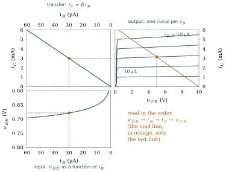
4.2.4How the characteristics are understood
Let us start from a reverse-biased diode. Its characteristic (figure 4.5a) is known: a tiny current, the saturation current
This is exactly what the forward-biased base-emitter junction achieves. Placed very close to the reverse-biased base-collector junction, it sends carriers into it: the reverse current of the base-collector junction, which was tiny, becomes large, and its level is controlled by
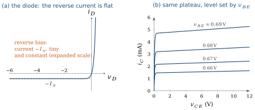
We then understand three features of the output characteristic: the flat plateaus (the current does not depend on the reverse voltage), their level (controlled by the input) and their knee near
Key points
The bipolar transistor is an input diode (the base-emitter junction) that controls an output current source: a flat current, whose level is set by the input. These are the two blocks we will use again for the small-signal model.
4.2.5The Early effect
The plateaus of figure 4.5b are not perfectly flat: when the reverse voltage increases, the base-collector junction widens, which narrows the base and lets a few more carriers through. The collector current therefore increases slightly with
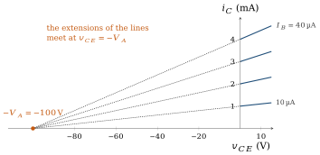
4.3The generic circuit: load lines and operating point
To know what the transistor does, it must be placed in a circuit. The simplest is the circuit of figure 4.7: a source
We have already seen this situation in chapter 1: it is the intersection of the characteristic of a source (source and resistance: a line of negative slope) and that of a two-terminal component, which share a terminal. Here we have two, one at the input, the other at the output, and the common terminal is the emitter.
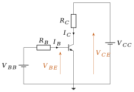
4.3.0.1At the input
The two-terminal component is the base-emitter junction (a diode); the source imposes the input load line
4.3.0.2At the output
The component is now the collector-emitter port, whose characteristic depends on
4.3.0.3Five examples
Take
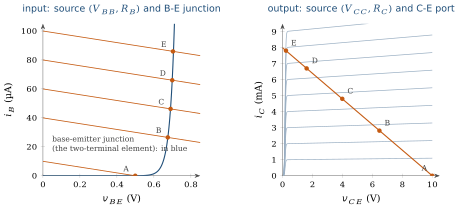
| Point | State | |||||
|---|---|---|---|---|---|---|
| A | 0.5 | 0.499 | 10.0 | cut off | ||
| B | 2 | 0.675 | 26.5 | 2.8 | 6.5 | active |
| C | 3 | 0.690 | 46.2 | 4.8 | 4.0 | active |
| D | 4 | 0.699 | 66.0 | 6.7 | 1.6 | active |
| E | 5 | 0.703 | 85.9 | 7.8 | 0.23 | saturated |
Three observations. First, from B to D, the source
4.3.0.4The transfer curve: an inverter or an amplifier
Let us now plot
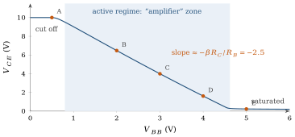
On the two plateaus, the output no longer depends on the input: cut off,
(high level); saturated, (low level). Low input, high output; high input, low output: it is a logic inverter. The transistor works as a switch. In the steep region, the output follows the input with a negative slope: it is an inverting amplifier. This slope is the gain. Here it is
: converts the variation of into a variation of base current, multiplies it, converts it back into a voltage. If could be imposed directly, the slope would be much steeper, (section 4.5): the resistor “dilutes” the control.
The same circuit is therefore a switch or an amplifier depending on where on the curve we place ourselves: everything lies in the biasing.
Key points: the discipline of the active region
To amplify, we impose a design rule on ourselves: stay in the active region whatever the signal (
The circuit of figure 4.7 (VCC = 10 V, RC = 1.25 kΩ, RB = 50 kΩ, β = 100, VA = 100 V), computed with the Ebers–Moll equations. The input line sets IB; the corresponding output curve crosses the load line at Q.
- Points A to E of table 4.3: VBB = 0.5 / 2 / 3 / 4 / 5 V.
- From B to D, VBE moves by only 24 mV: it is RB that converts VBB into base current.
- In the active region, the slope of the transfer curve is ≈ −βR_C/RB = −2.5.
4.4Switching: linear models and states of the transistor
As for the diode (chapter 3), we replace the nonlinear characteristic by piecewise linear models, one for each state (figure 4.10 and table 4.4).
| State | Model | Validity condition |
|---|---|---|
| Cut-off | in this model: the active assumption would give |
|
| Active | ||
| Saturation |
4.4.0.1Assumption, then check
We proceed as with the diode: we assume a state, calculate, and check the validity condition. For the generic circuit, assume the active region:
4.4.0.2Switching: two points
For switching, only the two ends of the load line are used: the cut-off point (open switch) and the saturated point (closed switch). To guarantee saturation despite the spread of
Attention : not too much overdrive
Too large a
4.4.0.3Amplifying: a point
To amplify,
4.4.0.4Operating limits
A real transistor does not withstand just any operating point. Its datasheet gives maximum values: a voltage
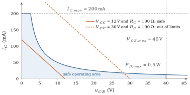
For a resistive load, the power
Key points: reading an operating point for troubleshooting
Measure
4.5The small-signal model
4.5.1Why biasing is necessary
The transistor is a nonlinear component: its law is exponential (4.5). What happens if a signal is applied directly to the base, without biasing? For
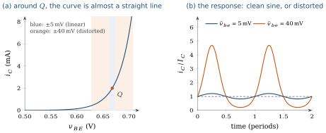
Figure 4.12 also shows the limit: the characteristic is linear only in a neighbourhood of
Watch out: the range of validity
The next term of the expansion produces a distortion whose second harmonic is, as a proportion of the fundamental,
4.5.2The hybrid two-port
The common-emitter transistor is a two-port network (chapter 1) whose natural quantities are
4.5.3Extracting the parameters
4.5.3.1From the graph
At the point
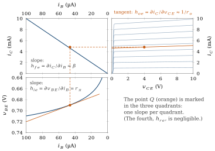
4.5.3.2By calculation
The characteristics are known; we can expand. Write
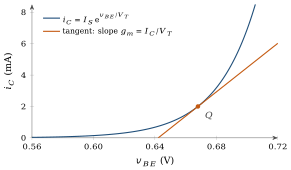
4.5.4The hybrid-
The two-port (4.10) is drawn as the diagram of figure 4.15, called the hybrid-
| Remark | ||
|---|---|---|
| input resistance seen from the base | ||
| current gain | ||
| output conductance (Early effect) | ||
| 0 | neglected |
4.5.4.1A first gain
Let us connect a resistor
4.5.4.2Link with textbooks
Many textbooks, including Boylestad [1], use the so-called
Attention : two notations, two quantities
4.5.5The small-signal model, element by element
As in chapter 1, each element of the circuit is replaced by its small-signal model, then the resulting linear circuit is solved. A small signal “passes through” a DC source without seeing it; a resistor remains a resistor; nonlinear elements are replaced by their slope at
| Element | Small-signal model |
|---|---|
| DC voltage source | short circuit (an AC ground) |
| DC current source | open circuit |
| Resistor |
the same resistor |
| Coupling or bypass capacitor | short circuit at the signal frequency |
| Diode (chapter 3) | dynamic resistance |
| Bipolar transistor | |
| Signal source | kept, with its internal resistance |
4.5.6The extraction algorithm
For any circuit, the approach is the same. It is the procedure of chapter 1 (the superposition theorem after linearisation) applied to the transistor.
Solve the DC problem: signal turned off, capacitors open. This gives
, (and ). Check the regime:
. If not, the small-signal model does not apply. Calculate the parameters:
, , . Build the AC diagram using table 4.6: the DC sources are turned off (a voltage source becomes a short circuit, that is a ground for the signal; a current source becomes an open circuit), the coupling and bypass capacitors are short circuits at the signal frequency.
Replace the transistor by the
model, connecting B, C and E to their nodes. Solve the linear circuit with the tools of chapter 1, then recombine:
, .
Let us apply steps 1 to 3 to point C of the generic circuit (
Part 3: bias circuits
4.6Bias circuits
4.6.1Where to place the point
In this chapter and the next, the point
For some applications, on the contrary, the operating point is deliberately placed at the edge of the load line, or even beyond. The quiescent current is saved, so efficiency is gained, and linearity is sacrificed. These are classes B and C, with class AB in between (figure 4.16 and table 4.7).
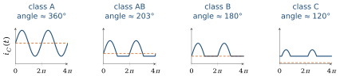
| Class | Position of |
Conduction angle | Maximum theoretical efficiency | Typical use |
|---|---|---|---|---|
| A | in the active region, far from both edges | 360° | 25 % (capacitor-coupled resistive load); 50 % (inductor- or transformer-coupled load) | small signals, high linearity |
| B | at cut-off | 180° | push-pull output stage: one transistor per half-cycle | |
| AB | just above cut-off | between 180° and 360° | between 50 % and 78.5 % | audio: removes the crossover distortion of class B |
| C | below cut-off | less than 180° | more than 78.5 %, tends towards 100 % as the angle tends towards 0 (in practice of the order of 65 to 80 %) | radio frequency, with a tuned load ( |
In class B, a single transistor reproduces only half the signal; two are combined, one per half-cycle (the push-pull mentioned in part 1). Near cut-off, the characteristic is very nonlinear, hence crossover distortion, which class AB reduces by letting a small quiescent current flow. In class C, the current is only a train of pulses; a load tuned to the signal frequency, which behaves like a filter (chapter 2), rebuilds the sinusoid. In these classes, the signal is no longer “small”: the small-signal model of section 4.5 does not apply, and large-signal analysis (chapter 1) takes over. Classes B, AB and C will be studied with transistor combinations in the next module. Here we restrict ourselves to class A.
4.6.2Class A bias circuits
In the generic circuit, biasing requires two sources,
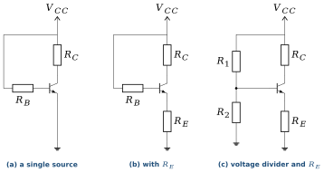
4.6.3A single source: fixed bias
The source
4.6.4The emitter resistor and negative feedback
Let us add a resistor
This negative feedback stabilises the point
4.6.5The voltage divider with
To reduce the resistance seen by the base, it is supplied by a voltage divider
Key points: design rule
Choose
The point Q of the voltage-divider bias and its margins
Voltage divider with RE (figure 4.17 c), VBE = 0.7 V, VCE,sat = 0.2 V. The orange dot is the exact point Q, equation (4.16); the hollow diamond is the result of the approximate method, which assumes that the divider sets VB. Compare the gap between the two with the criterion βRE ≥ 10R2. Tick “signal” to see the line swept by the signal and the resulting margins.
4.6.6The pnp: same circuit, reversed polarities
For a pnp, currents and voltages are reversed, but the equations stay the same. The circuit is redrawn as a mirror image: the emitter is connected to the positive supply through
4.6.7Comparison
Figure 4.18 compares three circuits supplied from
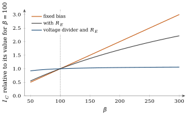
4.6.7.1Relative sensitivity to
The quality of a bias circuit is measured by the relative sensitivity
4.6.7.2Thermal drift
The voltage
A fourth classic bias circuit, collector feedback (Boylestad §4.6), connects the base to the collector through
| Circuit | Dependence on |
|
|---|---|---|
| Fixed | total: |
|
| With |
partial | |
| Voltage divider | small if |
Part 4: case studies
4.7Case study 1: a current source with a Zener diode
A circuit that imposes a current, independently of the load, is valuable: supplying an LED, biasing a stage, charging a capacitor at constant current. The transistor, combined with a Zener diode, provides an almost ideal one (figure 4.19, left).
4.7.1The principle
The Zener diode, reverse-biased through
The current depends neither on the load
Example:
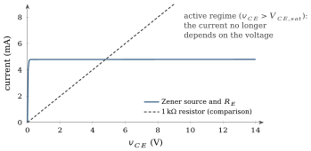
4.7.2Its limits
The source is imperfect for two reasons. First,
4.7.3The variant: the series regulator
If the load is placed at the emitter (figure 4.19, right), the output follows the Zener:
4.7.4An extension: the current mirror
A current source does not always need a Zener. The current mirror (figure 4.21) copies a reference current onto another branch. Two identical transistors share the same voltage
4.8Case study 2: the cascode
The current source of the previous section has a limit that comes from the Early effect (equation (4.6)): the current of a transistor increases a little with the voltage
Our Zener source already does much better, thanks to
Challenge
The current varies because
4.8.1The solution: a common-base stage
A second transistor
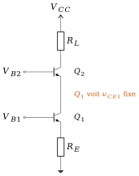
4.8.2What is gained, what is paid
A more complete calculation (in the next chapter) gives the output resistance
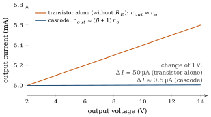
The price is the available voltage: the cascode stacks
And now?
We know how to place the point
To finish
4.9Check your understanding
What idea is common to all transistors concerning the control and the power? How does a transistor differ from a transformer?
Why is the control current of the bipolar transistor a drawback for a TTL logic gate and an asset at radio frequency? Why does the field-effect transistor not have this drawback?
What do
and represent? Why must a circuit not depend on the value of ? What do the Ebers–Moll equations contain, and how are cut-off, the active region and saturation read from them?
Start from a reverse-biased diode and explain how the bipolar transistor turns it into a controlled current source. Why are the output characteristics almost flat?
Why do the extensions of the output characteristics meet at
? Which quantity of the small-signal model results from this? In the generic circuit, how does the drive point
affect the output point? Through which element does the link between the two pass? On the transfer curve of the generic circuit, where does the transistor operate as a logic inverter, where as an amplifier? What does the slope in the active region represent?
In switching, why is the transistor given more base current than the strict minimum? What happens if it is given too much?
How do we check that a load line stays within the safe operating area? At which point of the line is the dissipated power maximum?
Why can a small signal not be amplified without biasing? Why must the signal stay small, and small where: at the source or across the junction?
Which
parameters are read on each quadrant? How are they found by calculation from ? Why is
placed inside the active region to amplify, and when is the middle of the load line the right choice? In which applications is it placed, on the contrary, at the edge or beyond? What is gained, what is lost (classes A, B, AB, C)? Explain, with the feedback of chapter 2, how an emitter resistor stabilises
. What is its price for the gain? Why is the voltage divider with
the most widely used bias circuit? What condition must it satisfy? Explain, with the Early effect, why a single transistor has a finite output resistance
, why the resistor of the Zener source already raises it, and what the cascode adds, in particular as regards the available voltage. To go further. When a transistor heats up,
decreases at constant current, so the current increases at constant voltage, so it heats up even more. Why can this loop become unstable? Which bias circuit avoids it?
4.10Summary
A transistor switches or amplifies. Its control is small: it copies the shape of the signal and injects the power of its bias circuit. Two families: bipolar (current control) and field effect (control by a field, without current). In all cases, it is a resistance controlled by a signal.
The bipolar transistor is a case study. The roadmap holds for any transistor: characteristic, operating point and biasing, small-signal model and superposition, two-port of the circuit.
The bipolar transistor follows
and ; the Ebers–Moll equations gather its regimes. The characteristics are understood from a reverse-biased diode whose saturation current is modulated by the base-emitter junction. The Early effect gives . The generic circuit is solved by two load lines, one at the input and one at the output, coupled through
. Its transfer curve has two plateaus (inverter) and a steep region (amplifier, slope ). Cut-off, active region and saturation each have a linear model: two points for switching (with overdrive), a point in the active region, with a margin on each side, for amplifying. The point must stay within the safe operating area ( , , ). Biasing is necessary because the law is nonlinear: we linearise around
(first order of the expansion of the exponential), with . The hybrid parameters are read as one slope per quadrant or calculated: , , . Each element has a small-signal model, and six steps extract the model of a circuit. The point
is in the active region, far from both edges, in class A (linear, low efficiency). In classes B, AB and C, it is at the edge or beyond: better efficiency, linearity sacrificed, small-signal model not applicable. These classes are studied in the next module. A single source, then
(local feedback), then a voltage divider with : , almost independent of . The sensitivity measures this; the pnp is handled as a mirror image. Course example (12 V, 47 kΩ/10 kΩ, 2.2 kΩ/1 kΩ, ): , . Case 1: with a Zener, the transistor becomes a current source
, or a series regulator; thanks to , its output resistance far exceeds , at the price of the voltage . Case 2: stacking a common base on the common emitter gives a cascode, whose output resistance reaches while losing only about one volt: .
4.11Exercises
The exercises for this chapter are collected in the tutorial problem book, in the section “Course application exercises” of chapter 4; their answers are in the tutorial solutions book, in the same place.